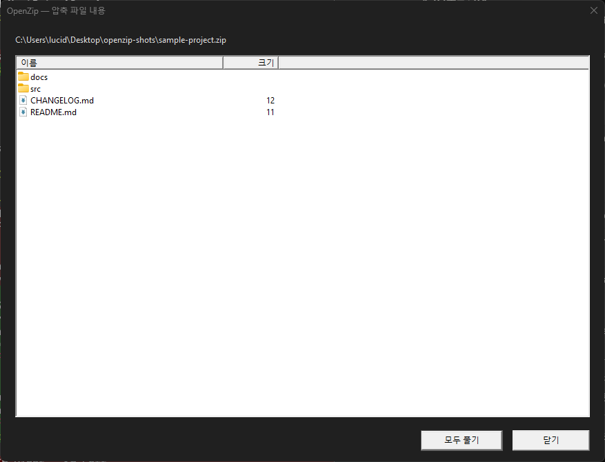
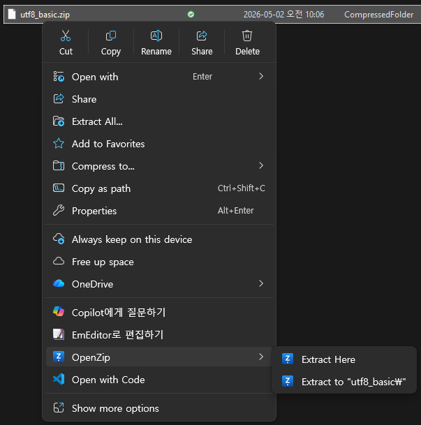
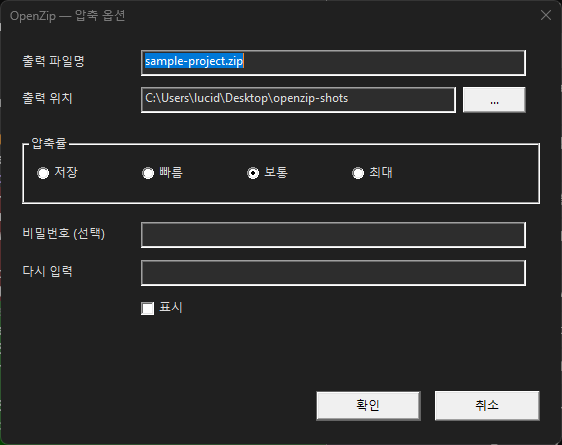
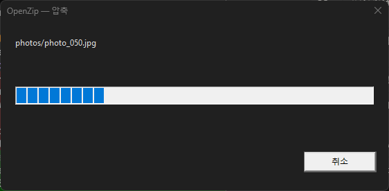
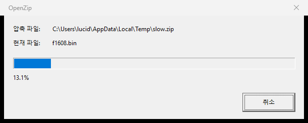

≈ 2 MB의 오픈소스≈ 2 MB, open-source
전체 크기 2 MB 안팎. MIT 라이선스로 GitHub에 전부 공개. 광고도, 텔레메트리도, 자동 업데이트도 없다. About 2 MB total. MIT-licensed, every line on GitHub. No ads, no telemetry, no silent updates.
Windows를 위한 작은 ZIP 도구. 코드는 GitHub에 공개되어 있고, 광고도 텔레메트리도 자동 업데이트도 없다. 한국어 파일명은 — 그저 깨지지 않는다. A small ZIP tool for Windows. Source on GitHub, MIT-licensed; no ads, no telemetry, no silent updates. Korean filenames just — work.
설치 후 PowerShell에서 Add-AppxPackage .\OpenZip_0.3.0.msix · 모든 릴리스는 GitHub에 공개합니다.
In PowerShell after download: Add-AppxPackage .\OpenZip_0.3.0.msix. Every release lives on GitHub.
전체 크기 2 MB 안팎. MIT 라이선스로 GitHub에 전부 공개. 광고도, 텔레메트리도, 자동 업데이트도 없다. About 2 MB total. MIT-licensed, every line on GitHub. No ads, no telemetry, no silent updates.
Win11 모던 메뉴와 Win10 클래식 메뉴 모두에 자연스럽게 들어간다. 압축·해제·옵션이 한 자리에. Sits naturally inside both the Win11 modern menu and the Win10 classic menu. Extract, compress, options — one place.
.zip을 더블클릭하면 트리·시스템 아이콘과 함께 내용물이 펼쳐진다. 하나만 꺼내거나, 묶어서 꺼낼 수 있다. Double-click an archive to see its tree with native shell icons. Extract one entry or a selection.
CP949·UTF-8 자동 판별. 옛 ZIP과 새 ZIP을 같은 방식으로 다루며, 한 글자도 ‘?’로 바꾸지 않는다. Automatic CP949/UTF-8 detection. Old archives and new archives are read the same way, without a single ‘?’.
읽을 때는 ZipCrypto·AES-256 모두 지원. 만들 때는 비밀번호가 있으면 AES-256으로 묶는다. Reads ZipCrypto and AES-256; writes AES-256 whenever a password is supplied.
Win11 다크 테마를 그대로 따른다. Zip-slip · 심볼릭 링크 · 압축 폭탄은 경고창 없이 조용히 거부한다. Follows the Win11 dark theme. Zip-slip, symlink, and decompression-bomb attempts are quietly refused — no dialogs.





설치하면 openzip 명령이 PATH에 추가된다. GUI와 같은 엔진이 동작하며, 다중 스레드로 풀고 출력은 정렬되어 나온다.
After install, openzip joins your PATH. The CLI shares the engine with the GUI, extracts in parallel, and prints in deterministic order.
Windows 10 build 18362 (1903) 이상 · Windows 11 · x64 전용 Windows 10 build 18362 (1903) or later · Windows 11 · x64 only
PS> openzip 동영상_백업.zip
✓ 2026 여행/제주.mp4 412.3 MB · 22%
✓ 2026 여행/부산_야경.mov 218.7 MB · 18%
✓ 2026 여행/계획서.hwp 38.4 KB · 41%
Done. 3 files · 4.2 s · 671 MB → 542 MB
PS> openzip -c .\프로젝트\ --password ****
packing 124 entries · AES-256 · level=normal
Done. 프로젝트.zip · 18.6 MB · 1.7 s